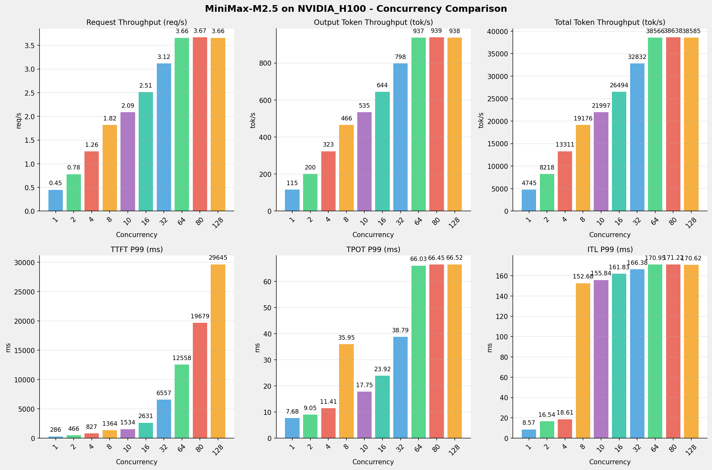
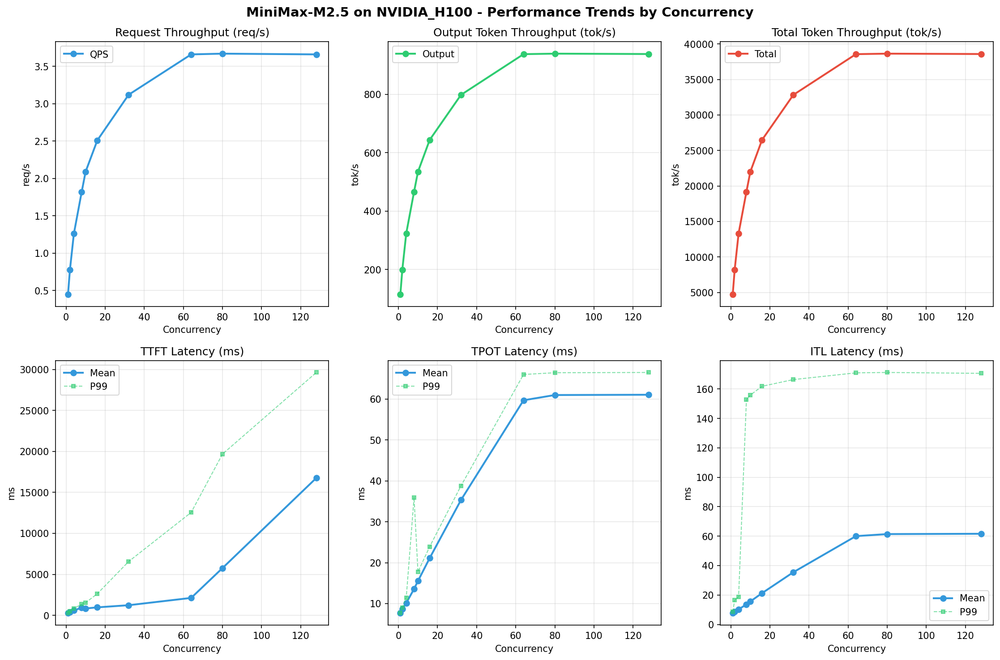

在固定请求数，输入上下文和输出上下文长度下，使用vllm bench serve工具对并发数逐级增加场景的性能基准验证。分析同一芯片同一模型在不同并发级别下的性能指标变化趋势。
主要采集指标：
| 指标 | 单位 | 含义 |
|---|---|---|
| TTFT | ms | Time To First Token，首 token 延迟 |
| TPOT | ms/token | Time Per Output Token，每 token 生成时间 |
| Throughput | tokens/s | 系统总吞吐 |
| QPS | requests/s | 请求吞吐 |
| P50/P95/P99 Latency | ms | 延迟分位数 |
| 项目 | 配置 | 备注 |
|---|---|---|
| 数据集 | random | |
| 并发数 | 1, 2, 4, 8, 10, 16, 32, 64, 80, 128 | |
| 总请求数 | 320 | |
| 请求输入上下文长度 | 10240（10k） | |
| 请求输出上下文长度 | 256（0.25k） | |
| 模型 | MiniMax-M2.5 | |
| 被测芯片 | NVIDIA_H100 |
| 参数名称 | NVIDIA_H100 |
|---|---|
| model_name | MiniMax-M2.5 |
| quantization_config | FP16 |
| model_size | 215G |
| max_position_embeddings | 196608 |
| temperature | N/A |
| top_k | N/A |
| top_p | N/A |
| transformers_version | 4.46.1 |
| vllm_version | 0.15.1 |
| python_version | 3.12.3 |
| 参数名称 | NVIDIA_H100 |
|---|---|
| model_name | MiniMax-M2.5 |
| max-model-len | 196608 |
| max-num-seqs | 10 |
| max-num-batched-tokens | 8192 |
| gpu-memory-utilization | 0.85 |
| dtype | default |
| block_size | default |
| dp | 1 |
| tp | 8 |
| pp | 1 |
| enable-export-parallel | True |
| enable-auto-tool-choice | True |
| tool-call-parser | minimax_m2 |
| reasoning-parser | minimax_m2 |
| 指标 | 1 并发 | 2 并发 | 4 并发 | 8 并发 | 10 并发 | 16 并发 | 32 并发 | 64 并发 | 80 并发 | 128 并发 |
|---|---|---|---|---|---|---|---|---|---|---|
| 成功请求数 | 320 | 320 | 320 | 320 | 320 | 320 | 320 | 320 | 320 | 320 |
| 失败请求数 | 0 | 0 | 0 | 0 | 0 | 0 | 0 | 0 | 0 | 0 |
| 测试持续时间 (s) | 710.45 | 410.23 | 253.27 | 175.80 | 153.26 | 127.24 | 102.68 | 87.41 | 87.25 | 87.37 |
| 总输入 tokens | 3289280 | 3289280 | 3289280 | 3289280 | 3289280 | 3289280 | 3289280 | 3289280 | 3289280 | 3289280 |
| 总生成 tokens | 81920 | 81920 | 81920 | 81920 | 81920 | 81920 | 81920 | 81920 | 81920 | 81920 |
| 请求吞吐量 (req/s) | 0.45 | 0.78 | 1.26 | 1.82 | 2.09 | 2.51 | 3.12 | 3.66 | 3.67 | 3.66 |
| 输出 token 吞吐量 (tok/s) | 115.31 | 199.70 | 323.45 | 465.99 | 534.52 | 643.80 | 797.81 | 937.16 | 938.91 | 937.61 |
| 峰值输出 token 吞吐量 (tok/s) | 132.00 | 244.00 | 436.00 | 760.00 | 900.00 | 1248.00 | 1920.00 | 2878.00 | 2880.00 | 2874.00 |
| 峰值并发请求数 | 2.00 | 4.00 | 8.00 | 16.00 | 19.00 | 26.00 | 40.00 | 72.00 | 86.00 | 134.00 |
| 总 token 吞吐量 (tok/s) | 4745.14 | 8217.92 | 13310.92 | 19176.39 | 21996.95 | 26494.03 | 32831.81 | 38566.45 | 38638.21 | 38585.00 |
| 指标 | 1 并发 | 2 并发 | 4 并发 | 8 并发 | 10 并发 | 16 并发 | 32 并发 | 64 并发 | 80 并发 | 128 并发 |
|---|---|---|---|---|---|---|---|---|---|---|
| 平均 TTFT (ms) | 264.19 | 360.79 | 584.15 | 931.63 | 827.89 | 967.22 | 1227.85 | 2119.88 | 5759.41 | 16764.52 |
| 中位 TTFT (ms) | 264.45 | 284.36 | 582.44 | 935.84 | 875.37 | 1032.07 | 968.59 | 981.41 | 3936.04 | 17718.86 |
| P95 TTFT (ms) | 275.76 | 463.55 | 821.10 | 1245.61 | 1309.06 | 1697.66 | 3978.00 | 10055.31 | 13080.99 | 27005.85 |
| P99 TTFT (ms) | 286.01 | 466.40 | 826.89 | 1364.44 | 1534.23 | 2630.84 | 6556.86 | 12557.76 | 19679.20 | 29645.32 |
| 指标 | 1 并发 | 2 并发 | 4 并发 | 8 并发 | 10 并发 | 16 并发 | 32 并发 | 64 并发 | 80 并发 | 128 并发 |
|---|---|---|---|---|---|---|---|---|---|---|
| 平均 TPOT (ms) | 7.67 | 8.64 | 10.12 | 13.58 | 15.52 | 21.13 | 35.33 | 59.72 | 61.00 | 61.07 |
| 中位 TPOT (ms) | 7.67 | 8.65 | 10.02 | 13.24 | 15.31 | 20.85 | 36.07 | 63.77 | 65.44 | 65.51 |
| P95 TPOT (ms) | 7.68 | 9.04 | 11.39 | 15.59 | 17.71 | 23.79 | 38.47 | 64.94 | 65.70 | 65.86 |
| P99 TPOT (ms) | 7.68 | 9.05 | 11.41 | 35.95 | 17.75 | 23.92 | 38.79 | 66.03 | 66.45 | 66.52 |
| 指标 | 1 并发 | 2 并发 | 4 并发 | 8 并发 | 10 并发 | 16 并发 | 32 并发 | 64 并发 | 80 并发 | 128 并发 |
|---|---|---|---|---|---|---|---|---|---|---|
| 平均 ITL (ms) | 7.70 | 8.68 | 10.20 | 13.66 | 15.60 | 21.27 | 35.48 | 60.01 | 61.40 | 61.61 |
| 中位 ITL (ms) | 7.69 | 8.28 | 9.24 | 10.60 | 11.23 | 13.09 | 16.79 | 22.71 | 22.72 | 22.76 |
| P95 ITL (ms) | 7.83 | 8.46 | 9.57 | 11.15 | 12.43 | 150.58 | 161.31 | 166.68 | 167.68 | 167.75 |
| P99 ITL (ms) | 8.57 | 16.54 | 18.61 | 152.68 | 155.84 | 161.83 | 166.38 | 170.95 | 171.22 | 170.62 |


请求吞吐量 (QPS): 随着并发级别增加，QPS持续上升。 低并发(1,2,4)平均 QPS: 0.83 req/s； 中并发(8,10,16,32)平均 QPS: 2.38 req/s； 高并发(64,80,128)平均 QPS: 3.66 req/s； 最高 QPS 出现在 80 并发，达到 3.67 req/s。
Token总吞吐量: 最高达到 38638 tok/s (80 并发)。
TTFT随并发增加显著上升。 低并发平均 P99 TTFT: 526ms； 高并发平均 P99 TTFT: 20627ms； 最高 P99 TTFT 出现在 128 并发，达到 29645ms。
TPOT随并发增加也呈上升趋势。 低并发平均 P99 TPOT: 9.38ms； 高并发平均 P99 TPOT: 66.33ms； 最高 P99 TPOT 出现在 128 并发，达到 66.52ms。
ITL随并发增加呈上升趋势。 低并发平均 P99 ITL: 14.57ms； 高并发平均 P99 ITL: 170.93ms； 最高 P99 ITL 出现在 80 并发，达到 171.22ms。
吞吐量增长: 从最低并发到最高并发，QPS增长了 713.3%。 TTFT延迟恶化: 高并发相比低并发，TTFT P99增加了 5531.4%。 TPOT延迟恶化: 高并发相比低并发，TPOT P99增加了 609.2%。